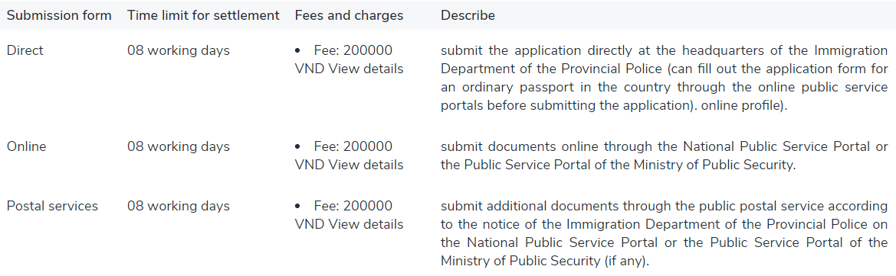
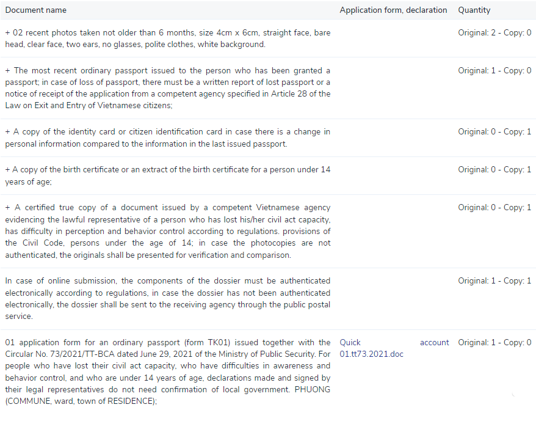

Home Page > Residence and Identity Documents > Passport > Provincial Level
The order of execution
Step 1:
Prepare documents according to the provisions of law.
Step 2:
Submit application
* The applicant for an ordinary passport without an electronic chip directly submits the application at office hours on working days of the week at the Immigration Department of the Provincial Police (on arrival). submit application must present ID card, citizen identification card or valid passport) or submit online application through the National Public Service Portal or the Public Service Portal of the Ministry of Public Security and submit additional documents dossiers via the public postal service according to the notice of the Immigration Department of the Provincial Police on the National Public Service Portal or the Public Service Portal of the Ministry of Public Security (if any), specifically:
+ The applicant for a passport for the first time must do so at the Immigration Department of the Police Department of the province where he/she permanently or temporarily resides; In case of having a citizen's identity card, it shall be carried out at the Immigration Department of the provincial-level Police Department in a convenient place.
+ The person applying for a passport from the second time must do it at the Immigration Department of the provincial-level Police Department in a convenient place.
* Immigration officers receive documents to check the legality and content of the dossier:
+ If the application is complete and valid, an appointment letter will be issued to the applicant for an ordinary passport; request fee payment to fee collectors, toll collectors, hand over payment receipts to applicants for ordinary passports or notify them on the National Public Service Portal or the Ministry of Public Service Portal The police let ordinary passport applicants pay online and receive electronic receipts.
+ In case the dossier is missing or invalid, the officer receiving the dossier shall guide or notify it on the National Public Service Portal or the Public Service Portal of the Ministry of Public Security so that the applicant for an ordinary passport can complete the dossier.
+ In case the dossier is not eligible, the dossier shall not be received, reply in writing or notify on the National Public Service Portal or the Public Service Portal of the Ministry of Public Security, clearly stating the reason.
* Ordinary passport applicants may request to receive results by postal service and must pay a delivery service fee.
* Time to receive documents: From Monday to Friday every week and Saturday morning (for units arranged to receive dossiers on Saturday morning); except Tet and public holidays.
Step 3:
Receive results
+ Ordinary passport applicants directly receive results at the Immigration Department of the Provincial Police; when you come to receive the results, bring the appointment letter to return the results, present your identity card or citizen identification card. In case of request to receive results via postal service, follow the instructions of the postal service provider.
+ In case an ordinary passport has not been issued, a written reply or notice on the National Public Service Portal or the Public Service Portal of the Ministry of Public Security shall be clearly stated.
+ Time to return passports: From Monday to Friday every week (except Tet and public holidays).
For other methods, read below
How to perform

Profile Composition Includes:

Implementing agencies
Provincial police
Requirements and conditions for implementation
Not falling into cases that have not yet been granted entry and exit papers as prescribed in Article 21 of the Law on exit and entry of Vietnamese citizens.